The Southern Old Jack Pine site contained a large scaffold-style flux tower, linked by cables to a thinner truss tower 100 meters away. There was an under-canopy radiation sensor mounted on a movable cart on a track running under the trees. There was also a large canopy access tower to allow scientists to get direct acess to the canopy for experiments. View an aerial photo-map of the SSA-OJP site.
 Location of the SSA within Canada. |
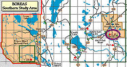 Location of the Old Jack Pine site within the SSA. |
 Map of the Southern Study Area Old Jack Pine site. | |
| SSA Old Jack Pine Flux Tower also called SSA-OJP-FLXTR (click here for detailed info) |
||
| Latitude: 53.91634 | UTM Easting: 520227.7 | BOREAS X: 413.52 |
| Longitude: -104.69203 | UTM Northing: 5974257.5 | BOREAS Y: 343.226 |
| Elevation (ASL): 579.27 m | UTM Zone: 13 | |
| 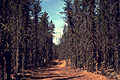 The road to the OJP site | 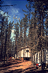 The flux tower and the hut |
| 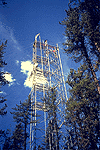 The flux tower< | 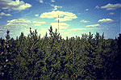 The truss tower connected to the flux tower by cables |
| 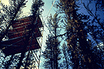 The canopy access tower | 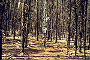 The SRC meteorology tower |
| 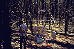 The under-canopy flux station | 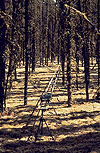 The under-canopy radiation track This is a 14 meter-long metal track in the forest with a mobile radiometer out on an arm on a small motorized cart (visible at the center of the picture) that travels through the forest taking measurements of PAR and net radiation. |
| 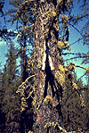 The moss-covered jack pine tree | 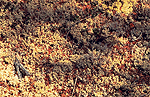 The ground cover at the OJP site |
Related Pages:
 BOREAS Home
BOREAS Home
 Study Region Overview
Study Region Overview
 Southern Study Area (SSA)
Southern Study Area (SSA)
 SSA Old Jack Pine Site (SSA-OJP)
SSA Old Jack Pine Site (SSA-OJP)
 NSA Old Jack Pine Site (NSA-OJP)
NSA Old Jack Pine Site (NSA-OJP)
Revison Date: January 25, 1999
{kind=link}
{kind=link}
{kind=link}
{kind=link}
{kind=link}
{kind=link}
{kind=link}
{kind=link}
{kind=link}
{kind=link}
{kind=link}